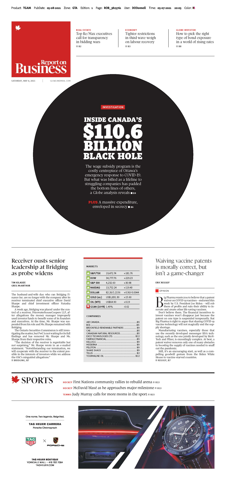

Unraveling the Canada Emergency Wage Subsidy
About me

Tom Cardoso, investigative reporter
at The Globe and Mail
This is a talk on how journalism and data work together.
Specifically, we'll be looking at the Canada Emergency Wage Subsidy.
CEWS? WTF?
During the early days of the pandemic, the federal government created the Canada Emergency Wage Subsidy, or CEWS.
Effectively, the program provided salary rebates for businesses experiencing pandemic-related revenue drops.
Cost: Roughly $100-billion.
But experts said there were some fairly clear design problems with the program.
There must be stories here, even though the data is awful.
So…
Step 1: Get the data.
Step 2: What can we do with this?
A lot!
How did we do these stories?
We combined datasets. Specifically…
- A copy of the CEWS registry
- Statistics Canada data
- Public company financial statements from SEDAR
- Data from the Office of the Superintendent of Bankruptcy
Statistics Canada
Inter-Corporate Ownership database
This data was then merged by name against the list of CEWS recipients. We took any companies that were public, or wholly-owned subsidiaries (or sub-sub-sub… etc. subsidiaries) of public companies.
Financial statements
Then, we manually pulled statements from SEDAR, which were analyzed by a team of four reporters
End result
A big, messy spreadsheet with findings!
Did a similar thing for bankrupt companies. Found many that took pandemic-relief funds despite having declared bankruptcy before the pandemic happened.
Findings
- Found 388 public companies (or wholly-owned subsidiaries) which received a combined $3.6-billion in CEWS as of early 2021.
- List includes some of the biggest companies in the country: Air Canada, BCE Inc., Canadian National Railway Co., Onex Corp., SNC-Lavalin Group Inc. and Suncor Energy Inc.
- Nearly a quarter of the companies receiving CEWS had higher revenue in 2020 vs. 2019. If these companies experienced losses, they were fleeting. This wasn't the stated purpose of CEWS.
- Dozens of companies that declared bankruptcy before the pandemic, with a combined $11-million in debts, took CEWS. Those payments amounted to a direct transfer from the government to creditors.
Reporting corroborated eaarlier this year by CRA documents shared in the House of Commons